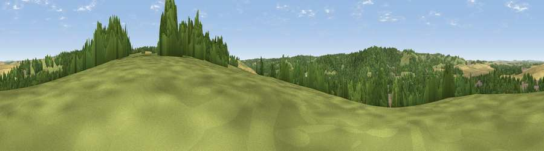

Viewpoint near Goring-on-Thames
#33052 in England · top 46% of its area beats it · near Goring-on-ThamesThe view, rendered

A 360° render of this exact spot computed from the terrain model, tree cover and land cover — summer colours, afternoon light, calibrated against photographs of famous viewpoints. Real trees, hedges and buildings will differ in detail.
The panorama
Grey silhouette: terrain skyline in each direction (720 bearings, Earth curvature and refraction included). Dashed green: skyline with trees (+15 m) and buildings (+8 m) as obstacles. Blue strip: how far the ground is visible on each bearing.
Where the view opens
Wedge length = distance to the farthest visible ground on that bearing (vegetation-aware). Rings at 10, 25 and 50 km.
What fills the view
47% woodland · 26% grassland · 21% cropland · 6% built-up ·
Angular shares of the visible panorama (visual magnitude), not map area. Landscape diversity 0.53 (0–1 Shannon).
Key numbers
More beautiful places nearby
The staircase of upgrades: each row has a higher view potential than everything closer. Driving times are estimates from straight-line distance, calibrated against real road routing — check an actual route before setting out.
| Place | Direction | Drive | Score |
|---|---|---|---|
| Viewpoint near Goring-on-Thames | SW · 2 km | ~5 min | 40.6 |
| Viewpoint near Streatley | W · 2 km | ~5 min | 57.3 |
| Viewpoint near Moulsford | WNW · 3 km | ~8 min | 58.8 |
| Viewpoint near Compton | WNW · 7 km | ~14 min | 64.1 |
| Castle Hill | NNW · 12 km | ~23 min | 68.3 |
| Round Hill | NNW · 12 km | ~23 min | 70.1 |
| Viewpoint near Watlington | NE · 16 km | ~28 min | 70.6 |
| Viewpoint near Lewknor | NE · 18 km | ~31 min | 70.8 |
51.52487, -1.12465 · source: screening · position refined by local search. Computed location — check access rights before visiting.